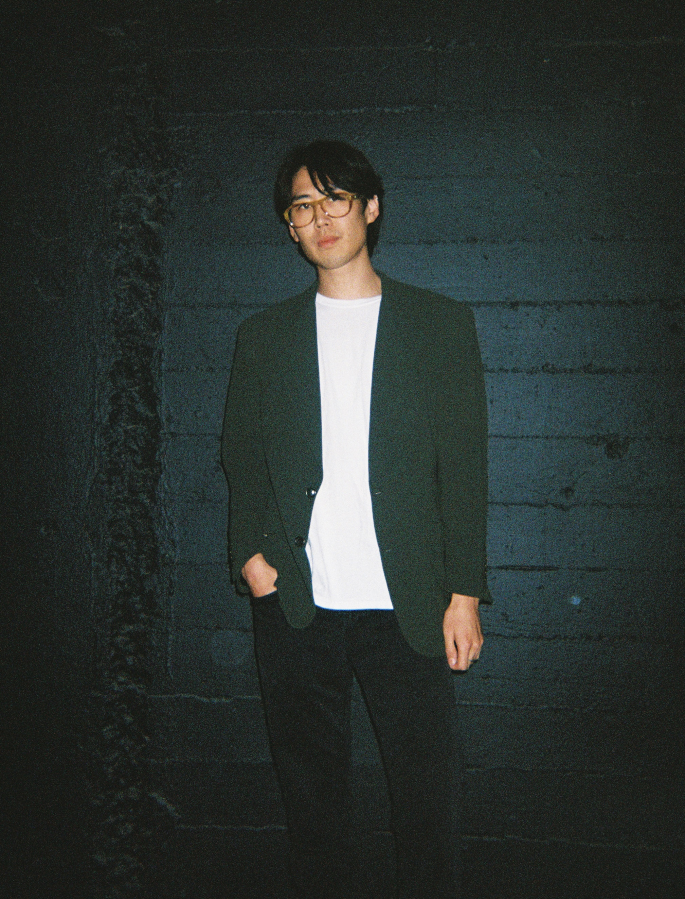

I am a 2nd year PhD candidate at Carnegie Mellon University, under the SAFE AI Lab and advised by Prof. Ding Zhao. My research interests include multimodal learning with physiological signals and representation learning with ECGs and text.

Selected Publications and Preprints
ECG-Byte: A Tokenizer for End-to-End Generative Electrocardiogram Language Modeling
William Han, Chaojing Duan, Michael Rosenberg, Emerson Liu, Ding Zhao
Interpretation of Intracardiac Electrograms Through Textual Representations
William Han, Diana Gomez, Avi Alok, Chaojing Duan, Michael Rosenberg, Douglas Weber, Emerson Liu, Ding Zhao
CHIL 2024
Automated Cardiovascular Record Retrieval by Multimodal Learning between Electrocardiogram and Clinical Report
Jielin Qiu*, Jiacheng Zhu*, Shiqi Liu, William Han, Jingqi Zhang, Chaojing Duan, Michael Rosenberg, Emerson Liu, Douglas Weber, Ding Zhao
ML4H 2023
Transfer Knowledge from Natural Language to Electrocardiography: Can We Detect Cardiovascular Disease Through Language Models?
Jielin Qiu*, William Han*, Jiacheng Zhu, Mengdi Xu, Michael Rosenberg, Emerson Liu, Douglas Weber, Ding Zhao
EACL 2023 Findings